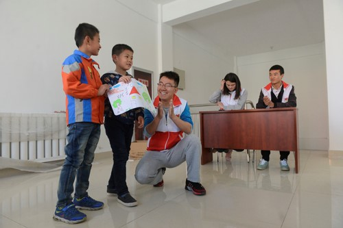

Yang Xiaoming
Guidian Volunteer Network date：2017-10-19 source：China Volunteer Service Network

Yang Xiaoming, male, born in January 1991, member of the Communist Party of China. In 2015, he became a volunteer of the Western Region and is currently the head of the Ningxia Shiguang Volunteer Volunteer Service Corps.
In 1991, he was born into a peasant family in Wuyuan County, a national poverty-stricken county. His mother was a deaf-mute disabled person. His father fell from an accident and fell into the root of the inconvenience. Young he lived with his grandparents, and his poor life made him understand that helping others will also be happy. On May 12, 2008, the Wenchuan earthquake shook the country and sprouted the idea of being a volunteer. He rushed to appeal on campus and in society, advocating more people to donate money for the disaster area; after organizing collective fundraising in the school, he organized a second donation and organized donations with the local government in the town. In September 2011, he was admitted to the School of Political Science and Law of Ningxia University. After entering the university, he immediately set up the Xiaoguang Love Heart Team and later changed its name to the Shiguang Volunteer Volunteer Service Corps. In 2011, it launched the “Assisting the Elderly and Supporting the Aged” activities, helping the city to beg and picking up more than 200 people for a long time. In 2012, the “One-on-One Student Aid” campaign was launched, and more than 200 families with difficulties were visited, and 100 people were “one-on-one”. In November 2012, we organized a volunteer service service for “big hand, small hand, and love to walk with you”, and established long-term volunteer service relationship with 28 primary schools where migrant children are concentrated. More than 300 activities have been carried out, and the number of students served has been accumulated. Ten thousand people.At the same time, for the children of a large number of migrant workers on the weekend, "unmanned unmanned" situation, and launched a "one-on-one obligation of renting a district" counseling activities, there are 24 fixed teaching points, long-term assistance to more than 1,000 students . In March 2013, we launched the “Renewal of Remaining Warmth” love activities, and provided long-term services with more than a dozen senior apartments and dozens of communities in the district. At the end of 2012, he accidentally found a message about the help of a rural teacher suffering from leukemia. He contacted his family at the first time and then issued an initiative. It has successively advocated the donation of tens of thousands of yuan, and the number of information published on the Internet has reached 4 million. Since then, it has specially opened up the "Love the Miles" campaign. The activity is mainly aimed at fundraising initiatives for the extremely poor groups and individuals. Up to now, more than 20 individuals and groups have been assisted, and more than 300,000 yuan have been donated together with various organizations to raise tens of thousands of materials. Up to now, the glimmers created in the Ningxia universities and cities and counties have established 21 detachments, recruited more than 11,000 volunteers, accumulated more than 2,500 activities, and participated in more than 75,000 volunteers. Volunteer service time exceeded 160,000 hours, and accumulated more than 140,000 person-times of help, raising more than 800,000 donations for vulnerable groups in the community, and countless materials.
Yang Xiaoming’s personal deeds were reported by more than 100 central and local mainstream media such as People’s Daily, Xinhua News Agency, Guangming Daily, Zhongqing Daily, Ningxia Radio and Television, and Ningxia Daily. After graduating from college, he resolutely chose the Western Plan and became a Western Program volunteer. He is currently serving in the volunteer department of the Yinchuan Volunteers Association and is responsible for the volunteer service of the Association.
【Editor in charge: Liu Yanan】